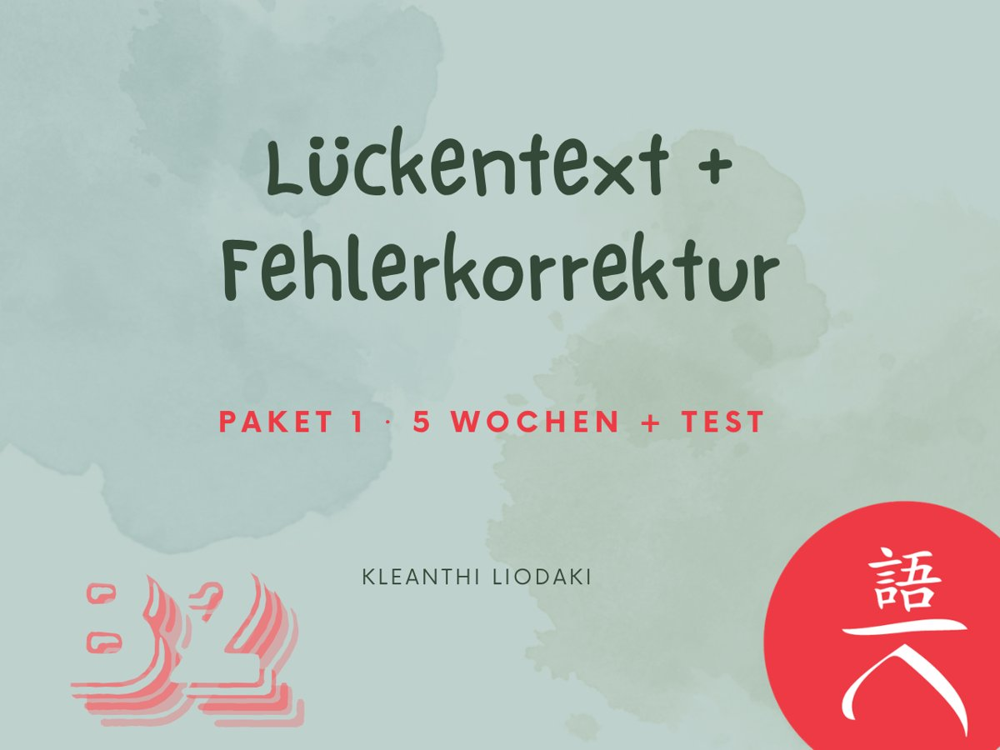
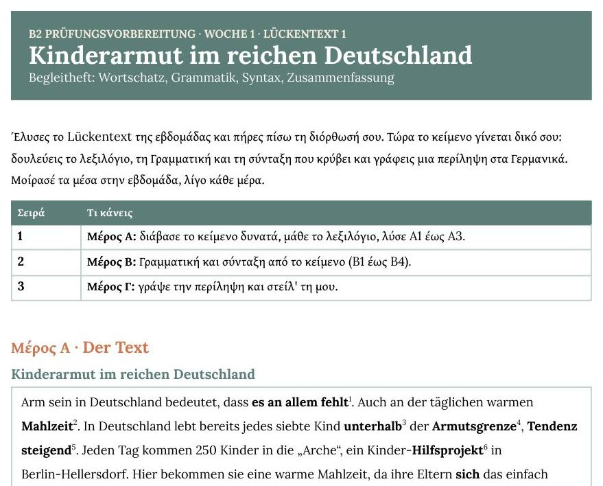
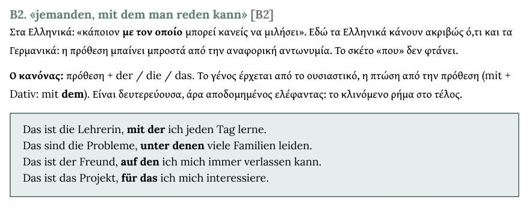
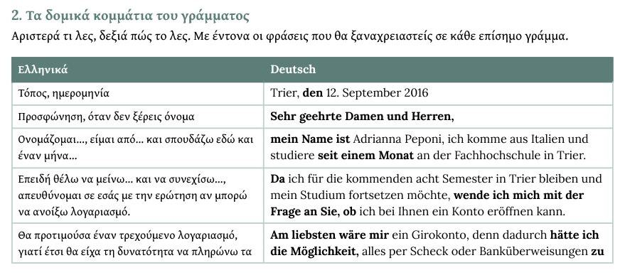

Χωρίς τμήμα και χωρίς να τρέχεις να προλάβεις μάθημα. Πέντε εβδομάδες με κείμενα που σε προπονούν σε πραγματικά κομμάτια των εξετάσεων, εμβάθυνση στη Γραμματική και στη Σύνταξη, και τα μάτια μου πάνω σε ό,τι γράφεις και λες.
Για σένα, αν έχεις αφήσει πίσω το No-Brainer, ετοιμάζεσαι να δώσεις εξετάσεις B2 και θέλεις να μπεις σε πιο πρακτική εξάσκηση. Σου διδάσκω πώς να σκέφτεσαι στα Lückentexte ώστε να βρίσκεις τις λύσεις, και πώς να γράφεις επίσημα γράμματα, όπως στο Teil 2 του Schreiben στο Goethe-Zertifikat B2.
Αν δεν χωράει στο πρόγραμμά σου ένα τμήμα με σταθερή ώρα, αλλά θέλεις κάποιον να βλέπει τη δουλειά σου και να σου λέει πού ακριβώς σκοντάφτεις.
Δουλεύεις όποτε μπορείς μέσα στην εβδομάδα. Εγώ διορθώνω προσωπικά ό,τι μου στέλνεις.
Ο κύκλος κλείνει μέσα στην εβδομάδα και ξαναρχίζει με το επόμενο κείμενο.
Ένα κείμενο με δώδεκα κενά, του ίδιου τύπου με το Lückentext του ÖSD B2 (εκεί τα κενά είναι δέκα). Αυτό είναι μόνο η αρχή: μετά το κείμενο γίνεται δικό σου.


Ένα επίσημο γράμμα με δώδεκα λάθη. Τα βρίσκεις, και μετά μαθαίνεις το σωστό γράμμα σχεδόν απέξω, με κρύβε-λέγε. Έτσι, όταν στην εξέταση γράφεις το δικό σου επίσημο κείμενο στο δεύτερο μέρος του Schreiben στο Goethe-Zertifikat B2, οι φράσεις βγαίνουν χωρίς σκέψη.

Από δυόμισι ως τεσσεράμισι ώρες την εβδομάδα, ανάλογα με τον ρυθμό σου: γύρω στα 20 με 40 λεπτά τη μέρα. Ένα παράδειγμα για το πώς μοιράζονται:
| Μέρα | Τι κάνεις |
|---|---|
| Δευτέρα | Lückentext και Fehlerkorrektur, τα στέλνεις |
| Τρίτη | Begleitheft Fehlerkorrektur: γιατί ήταν λάθος, και κρύβε-λέγε |
| Τετάρτη | Begleitheft Lückentext: κείμενο και λεξιλόγιο |
| Πέμπτη | Begleitheft Lückentext: Γραμματική και Σύνταξη, με τις λύσεις |
| Παρασκευή | Περίληψη (ηχογράφηση) και το γράμμα απέξω |
| Σάββατο | Το δικό σου E-Mail |
| Κυριακή | Επανάληψη του γράμματος |
| Σύνολο | από 2 ώρες 15' ως 4 ώρες 30' |
Η σειρά είναι πρόταση, όχι κανόνας. Αν η Δευτέρα σου είναι γεμάτη, ξεκινάς την Τρίτη. Αρκεί να κρατάς το ρυθμό: ένα Lückentext και μία Fehlerkorrektur την εβδομάδα.
Μετά τα πέντε κείμενα παίρνεις ένα βοήθημα με πλάνο πέντε ημερών: τι να ξαναδείς και με ποια σειρά, η Γραμματική που θα χρειαστείς και ένα Self-Test. Στο τέλος γράφεις το τεστ πάνω στα πέντε κείμενα.
Διορθώνω προσωπικά το Lückentext, την περίληψή σου, τη Fehlerkorrektur και το E-Mail σου. Σου στέλνω πίσω τις διορθώσεις την ίδια μέρα ή την επόμενη, για να μη χάνεις τον ρυθμό της εβδομάδας.
Τα κείμενα είναι δεκαπέντε, χωρισμένα σε τρία πακέτα. Το καθένα κρατά έξι εβδομάδες: πέντε για τα κείμενα και μία για το τεστ.
Kinderarmut, Rollenverteilung, Magersucht, Cluburlaub, Internet
Πέντε νέα κείμενα και πέντε νέα γράμματα
Πέντε νέα κείμενα και πέντε νέα γράμματα
Επειδή όλα τα διορθώνω προσωπικά, οι θέσεις στον πιλοτικό κύκλο είναι λίγες, γύρω στις 5-6.
Πιλοτικός κύκλος: 155€ για το πρώτο πακέτο (πέντε κείμενα, πέντε γράμματα, τεστ, έξι εβδομάδες). Η πρώτη εβδομάδα ανοίγει μόλις εγγραφείς.
Κλεάνθη Λιοδάκη